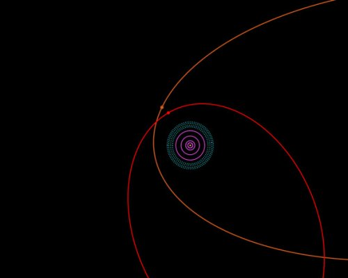
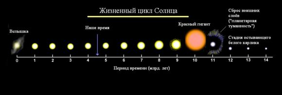

Ученые астрономы обнаружили еще одну карликовую планету, находящуюся за установленными границами Солнечной системы. Эта новая планета, 2012 VP113, находится в районе внутренней границы облака Оорта и ее орбита пролегает дальше орбиты Седны (Sedna), также карликовой планеты, находящейся за пределами пояса Койпера и обнаруженной в 2003 году.
На представленной еще ниже диаграмме показана условная модель Солнечной системы, естественно, желтая точка в центре обозначает Солнце. Фиолетовыми кругами показаны орбиты Юпитера, Сатурна, Урана и Нептуна, а пояс Койпера определен областью из синих пунктирных линий. Орбита Седны показана оранжевым цветом, а орбита 2012 VP113 - красным.
Отметим, что Седна движется по эллиптической орбите, самая ближняя точка которой находится на расстоянии 76 АЕ от Солнца, а самая дальняя - 1000 АЕ, цикл одного обращения Седны вокруг Солнца составляет около 11400 лет. Как уже упоминалось выше, самая близкая точка орбиты 2012 VP113 располагается на удалении 80 АЕ от Солнца, а самая дальняя - 452 АЕ. 2012 VP113 представляет собой карликовую планету, диаметром 450 километров и это приблизительно в два раза меньше диаметра Седны.
Существование Седны и 2012 VP113 является для астрономов обескураживающим фактором. Ученые считают, что причиной аномалий за границами Солнечной системы может быть некий массивный объект, находящийся за внешней границей пояса Койпера. Этот объект должен быть неоткрытой еще планетой, размер которой должен соответствовать или превышать размер Земли. "Весьма похожие параметры орбит Седны и 2012 VP113 указывают на то, что на их конфигурацию оказало одно и тоже массивное космическое тело. И теперь мы будем продолжать поиски как этого тела, так и других карликовых планет, подобных Седне и 2012 VP113".
Солнце относится к группе небольших по размерам и массе звёзд, и с этой точки зрения оно является рядовой звездой нашей Галактики. Эта скромная звезда не прожила еще и половины отпущенного ей природой срока, и по антропной аналогии представляет собой человека средних лет (35—40 лет). В тоже время известно, что в его недрах израсходовано почти половина водорода, превращение которого в гелий, является основным источником его энергии. В настоящее время точно определено что содержание водорода в массе Солнца составляет 36,3 %, вместо 70,6 %, которые составляли его массу на период рождения из протосолнечного облака. Интенсивность процессов энерговыделения в Солнце такова что каждую секунду 600 млн тонн водорода в его недрах превращаются в гелий. При этом 4,3 тонны становится электромагнитной энергией, которая даёт тепло Солнцу, и всей Солнечной системе. Протекание термоядерных реакций в его центральных областях происходит при температурах около 15—16 млн градусов, по т. н. «углеродному циклу». В центре Солнца присутствует гигантское давление (~100 млрд атм), и это позволяет сохранить устойчивость звезды в противоборстве с силами тяжести верхних слоев его вещества. Процессы борьбы гравитации и чудовищного давления, сбалансированных в течение миллиардов лет, так или иначе окончатся победой гравитации вследствие исчерпания термоядерной энергии в его недрах. Области, в которых происходит термоядерный синтез на Солнце, постоянно расширяются, и соответственно неизбежно возрастает общая светимость Солнца. Современные гипотезы происхождения Солнца утверждают, что в самых ранних стадиях его рождения, светимость его составляла около 70 % от нынешнего уровня, и в соответствии с расчётами следующие 6,5 миллиардов лет его общая светимость будет расти прямо пропорционально времени. В тот момент времени, когда в центре Солнца термоядерные реакции прекратятся, начнутся новые процессы противоборства между его ядром и внешними слоями. В результате сжатия его ядра повысится концентрация остатков еще не вступившего в термоядерную реакцию водорода, и начнётся новый бурный цикл реакций, в результате ядро Солнца вновь будет расширено. По достижении Солнцем возраста в 7,5 миллиарда лет, оно резко увеличится в размерах и перейдет в фазу красного гиганта. При этом его диаметр станет больше нынешнего примерно в 160 раз (~225 млн км), что больше по размерам, чем диаметр орбит Меркурия и Венеры. Оболочка этого своеобразного Солнца будет иметь температуру около 3000 градусов. Поверхностные массы газов будут достаточно быстро рассеиваться, и в результате будет потеряна в окружающее пространство значительная масса. Такая фаза существования Солнца продлится несколько десятков миллионов лет. Центр Солнца будет представлять из себя плотный, раскалённый шар, который сравнительно быстро разогреется до 100 млн градусов, и уровень температур в его ядре преодолеет порог начала термоядерных реакций для гелия. Превращение гелия в углерод будет продолжать снабжать энергией нашу звезду в течение еще длительного времени. На этой фазе жизни Солнца, оно перейдёт в состояние белого карлика, и уменьшившись в 10 раз в размерах, увеличит свою светимость в 40—50 раз. Фаза «выжигания» гелия продлится примерно 100—150 млн лет. В тот момент, когда запасы гелия и остатков водорода закончатся, повторится бурное расширение Солнца, и оно снова станет красным гигантом. Зона горения гелия переместится ближе к периферии. Светило, в которое превратится Солнце, потеряет стабильность: начнутся отдельные вспышки, происходящие от того, что в ядерную реакцию включатся не затронутые ранее остатки гелия. Светимость будет то резко возрастать, то падать — такое показывают наблюдения за другими звёздами. В отдельных случаях светимость звезды будет возрастать более чем в 5000 раз от современного уровня. Это заключительный акт умирания малых и средних по размеру звёзд. В дальнейшем будет усиливаться солнечный ветер (рассеивание газов звёздной оболочки). Через несколько тысяч лет от красного гиганта останется лишь маленькое горячее ядро, и приблизительно через 75 000 лет наша звезда снова будет в стадии белого карлика, который постепенно остывает. Остаток массы составит около 50 % от той, что Солнце имеет сейчас, а его диаметр уменьшится до 80 000 километров (меньше диаметра Сатурна). Плотность вещества на Солнце достигнет двух миллионов тонн в каждом кубическом сантиметре. Вся история нашего Солнца займет период времени 12,4 миллиарда лет.
В конечном счете, все, что останется от Солнца, — белый карлик, горячий, тусклый и необычайно плотный объект, в половину его начальной массы, а размером примерно в диаметр Земли. Если представить себе будущие угловые размеры такого Солнца рассматриваемое с поверхности современной орбиты Земли, то это будет светящаяся точка приблизительно размером с Венеру и яркостью в 100 раз больше чем нынешнее Солнце. Поскольку Солнце постепенно умирает, уровень его гравитационного притяжения на орбитальных планетах, кометах и астероидах уменьшится. Орбита Земли и орбиты других планет существенно расширятся. Когда Солнце станет белым карликом, будет достигнута заключительная конфигурация Солнечной системы: Меркурий давно прекратит своё существование; Венера будет находиться примерно на одну треть дальше чем нынешняя орбита Земли (примерно 1.35 а. е.), а орбита Земли будет расположена приблизительно на треть дальше, чем нынешняя орбита Марса — теперь (примерно 1.85 а. е.), орбита Марса почти удвоится (примерно 2.8 а. е.). В целом наша Солнечная система изменится весьма значительно. Венера и Земля, и другие оставшиеся миры в нашей Солнечной системе будут погружены в глубокий холод и будут представлять из себя замороженные, тёмные, холодные, и безжизненные миры. Они продолжат своё движение по орбитам их мёртвой звезды, а их скорость сильно замедлится из-за их увеличенного расстояния от Солнца и меньшей гравитации. В течение последующих двух миллиардов лет, вследствие охлаждения белого карлика в которое превратится Солнце, углерод в его ядре кристаллизуется, преобразуясь в гигантский алмаз. В конечном счёте, белый карлик, медленно охлаждаясь за миллиарды и триллионы лет, прекратит излучать в космическое пространство свет, затем инфракрасное излучение и радиоволны.